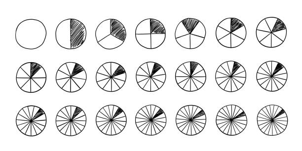

Olá, viajantes!
Que bom ter você aqui. A partir de agora, você iniciará uma verdadeira jornada pelo mundo das frações.
Nosso objetivo? Aprender sobre frações equivalentes de um jeito totalmente novo: através de atividades dinâmicas, visuais e muito divertidas.
Não se preocupe com as dificuldades, nós vamos caminhar juntos por cada etapa desse universo.
